Real-Time Environment Mapping
回顾：环境光照
环境光照(environment lighting)是表示来自所有方向的直接光照（来自无限远的光）的图像。常见形式有：
- 球体贴图(spherical map)
- 立方体贴图(cube map)
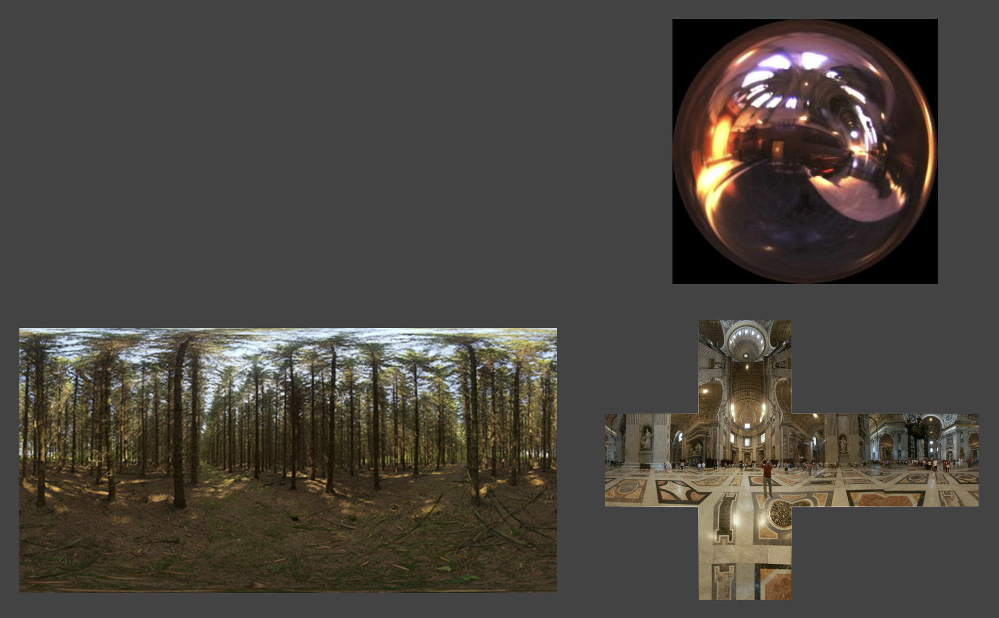
Shading from Environment Lighting
根据环境光照进行着色的技术有一个非正式的名称，叫做基于图像的光照(image-based lighting, IBL)。对场景中任意一点着色便是在求解渲染方程（不考虑阴影）：
通用解法便是蒙特卡洛积分法，可以得到近似的数值，但需要大量采样点，因此计算很慢。那么我们能否避免采样呢？
Tip
不过最近几年出现了时间、空间的滤波，采样复用等研究进展，使得采样方法得以在实时渲染领域得到应用。尽管如此，我们还是希望尽可能避免做采样。
在着手解决之前先做一些观察吧。注意到：
- 镜面材质的 BRDF -> 只覆盖了很小的球面面积（因为反射光线比较集中）
- 漫反射材质的 BRDF -> 覆盖了大多数球面，且十分平滑（因为反射光线沿四面八方发射）
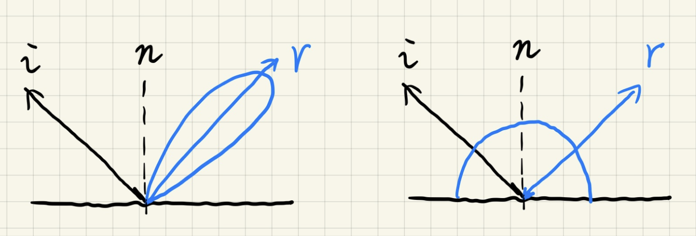
之前提到的积分近似公式就在这里派上用场了，因为 BRDF 正好满足了近似公式的使用条件（积分区域小，或者函数平滑变化）！
将渲染方程代入，得到（方框标出来的就是光照项）：
回顾近似公式在计算阴影中的应用
当时我们分离出来的是可见性函数项。所以要根据情况灵活使用近似公式。
拆出来的那一项相当于对环境光照进行了一个预滤波(prefiltering)（模糊，渲染之前就算好了）的处理：
- 预生成一组不同过滤的环境光照
- 中间过渡的滤波器大小可通过三线性插值近似得到（类似 Mipmap）
- 比如知道大小为 4x4 和 8x8 的滤波器，可通过插值得到 5x5 大小的滤波器
- 对于球形贴图，滤波器大小对应了立体角大小
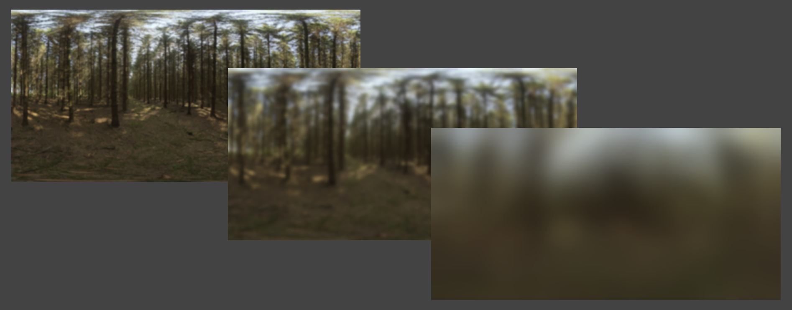
之后便能查询 \(r\)（镜面反射）方向的预滤波环境光照。
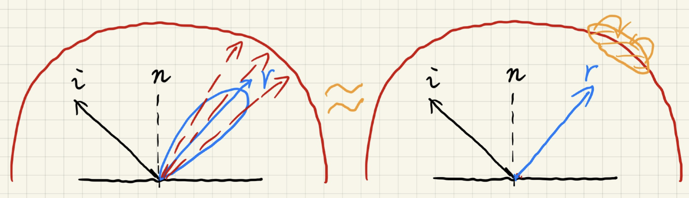
不过等号右边的第二项依然是一个积分，它也应当避免采样。一种思路是预先计算所有可能变量组合的值，包括粗糙度、颜色（菲涅尔项）等。但这需要一个维度极高的巨大表格。
回顾：微表面 BRDF
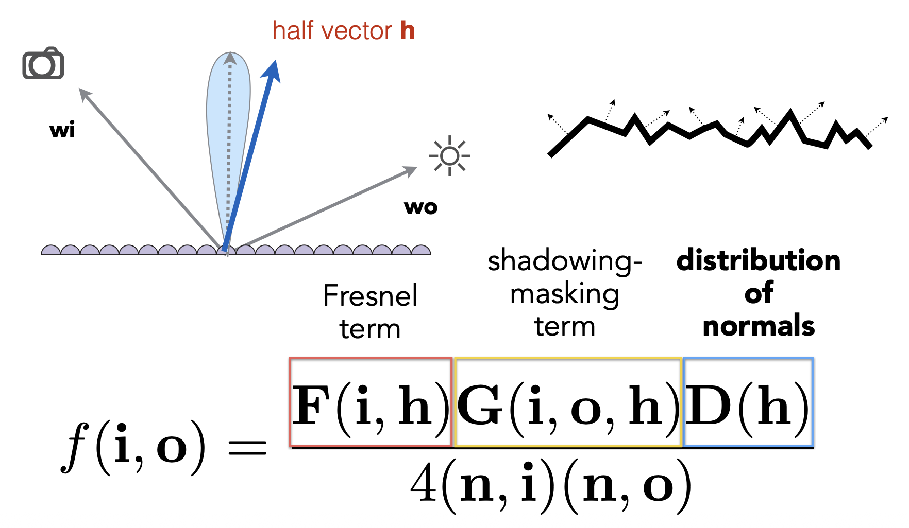
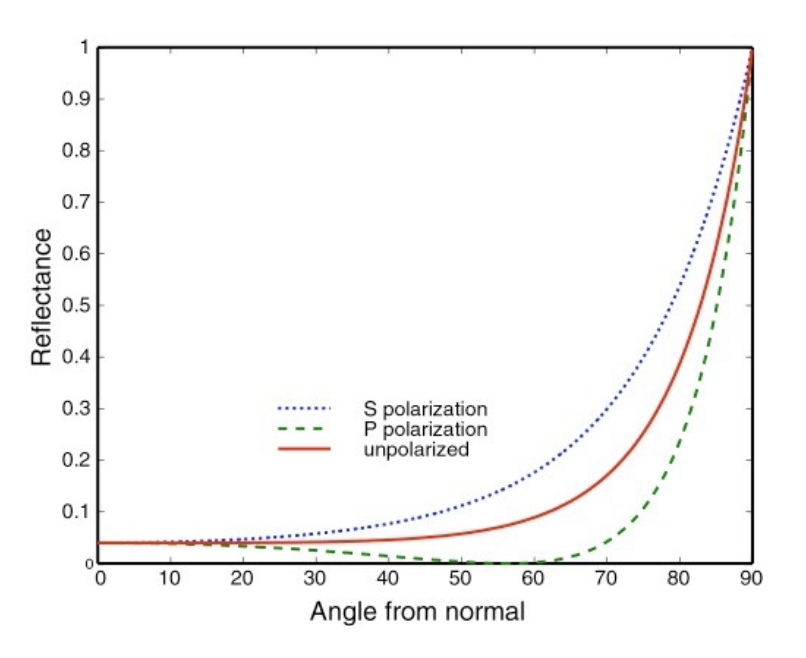
-
用 Schlick 近似表示菲涅尔项（基础反射率（颜色）\(R_0\) 和入射角度 \(\theta\)）
\[ \begin{aligned} R(\theta) &= R_0 + (1 - R_0)(1 - \cos \theta)^5 \\ R_0 &= \left( \frac{n_1 - n_2}{n_1 + n_2} \right)^2 \end{aligned} \]
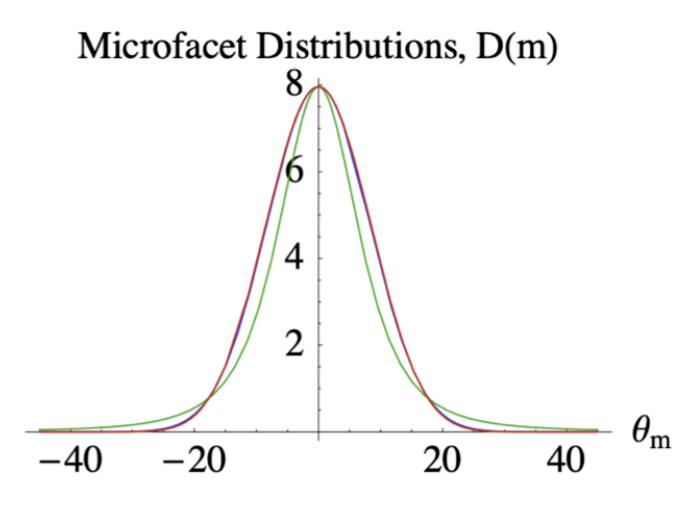
-
NDF 项以 Beckmann 分布为例（粗糙度 \(\alpha\)，半程向量与法线的夹角 \(\theta_h\)）
\[ D(h) = \frac{e^{-\frac{\tan^2 \theta_h}{\alpha^2}}}{\pi \alpha^2 \cos^4 \theta_h} \]
人们发现，如果菲涅尔项采用 Schlick 近似，就可以把「基础颜色」项给提取出来。
经过这样的转换后，消除了原来积分项对基础反射率的依赖，里面只剩下了两个变量，即粗糙度和入射角度。因此现在预计算的结果可以用一张二维表格（纹理）呈现了。
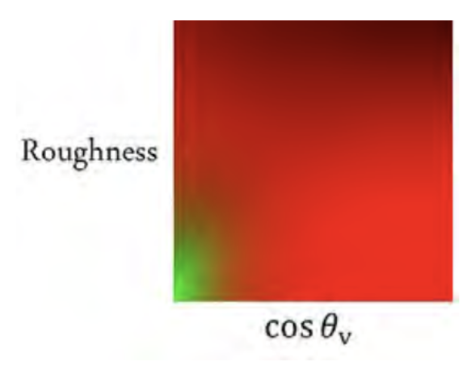
经过上述努力，我们成功完全避免了采样，并且能得到快速且高质量的结果。
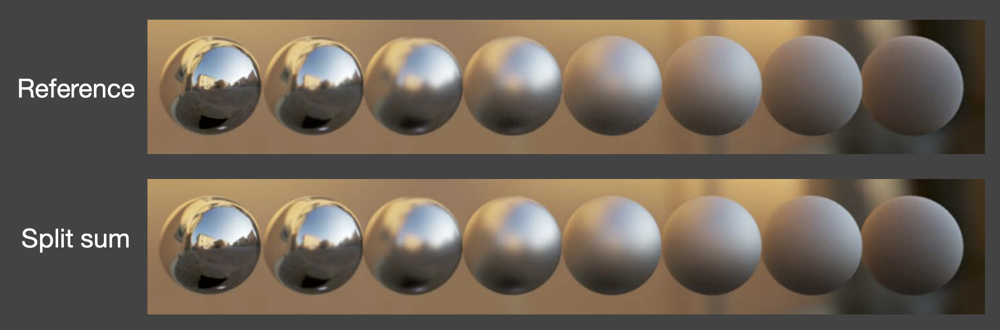
该方法被称为分割和(split sum)近似。之所以取这个名字，是因为工业界中往往采用的是离散形式，但实质上和这里介绍的积分近似是差不多的。
Shadow from Environment Lighting
在实时渲染领域中，一般来说很难实现在环境光照下的阴影。这里面有不同的看法：
- 多光源问题：阴影贴图的成本与光源数呈线性相关
- 采样问题：求解可见性项 \(V\) 可能很复杂，且无法将它轻易地从环境中分离开来
- 很难用到之前介绍的近似公式化简（想想那两个条件能否在环境光照中得到满足）
- 可以尝试用环境光遮蔽(ambient occlusion)近似表示，但要求环境光是恒定的（比如要么全白、要么全灰）
业界给出的一种解决方案是仅为最亮的光源生成一张或（少量）阴影贴图。而相关研究有：
- 不完美的阴影贴图(imperfect shadow maps)：实际上是在做间接光照
- 光切割(light cuts)：解决多光源问题
- 实时光线追踪(real-time ray tracing, RTRT)（可能是最终解决方案）：路径追踪 + 去噪
- 预计算辐射传输(precomputed radiance transfer)（待会儿要介绍的）
Background Knowledge
Frequency and Filtering
要用数学表示频率，自然绕不开傅里叶定理(Fourier theorem)。傅里叶函数是一系列正弦和余弦函数的加权和（线性组合）。
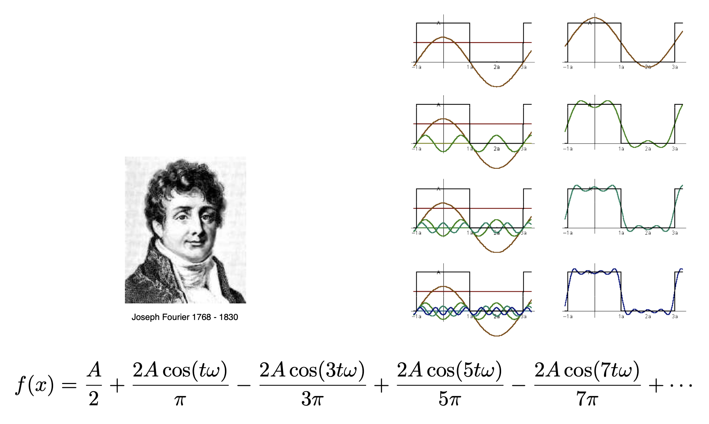
下面是图像信号频率可视化的结果：
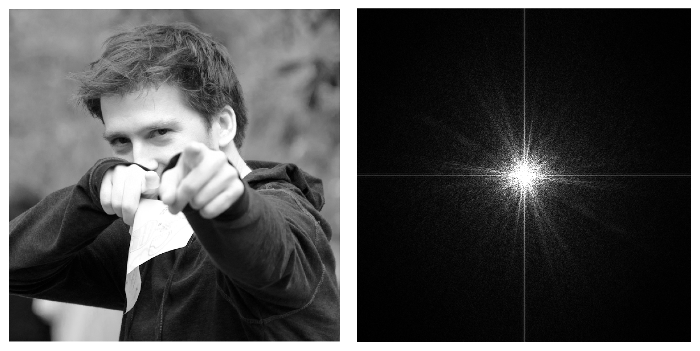
- 右图中间白色对应人物的头发，因为这块地方的频率发生剧烈变化
- 而背景是黑色的，说明频率变化平缓
而滤波(filtering)操作就是指剔除特定频率的一些内容，比如下面通过低通滤波器(low-pass filter)滤除了高频信号，因此整张图像变得模糊不清。
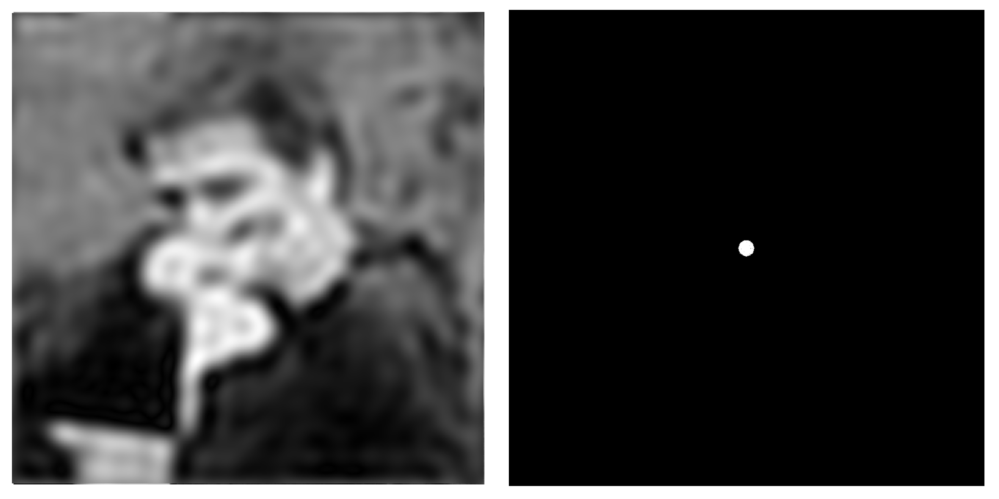
滤波操作在数学层面上可以用卷积(convolution)来表达。卷积定理(convolution theorem)表明，时域上（图像和卷积核）的卷积 == 频域上（图像频谱和与卷积核频谱）的乘法。
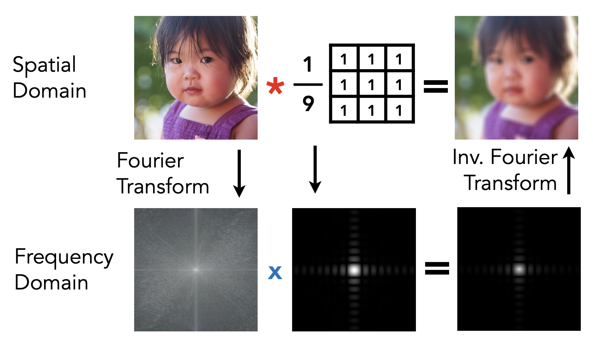
更一般的理解是：任何乘积的积分（\(\int_\Omega f(x)g(x) dx\)）都可被视为一种滤波操作。
- 低频意味着函数变化速度慢/平滑/...
- 积分的频率是乘积中频率最小的那一项的频率
Basis Functions
基函数(basis functions)是指一组能用于表示其他函数的函数。
例子：傅里叶级数、多项式级数等。
Real-time Environment Lighting (& Global Illumination)
Spherical Harmonics (SH)
球谐函数(spherical harmonics, SH)是指定义在球体上的一组 2D 基函数 \(B_i(\omega)\)，可类比 1D 情况下的傅里叶级数。
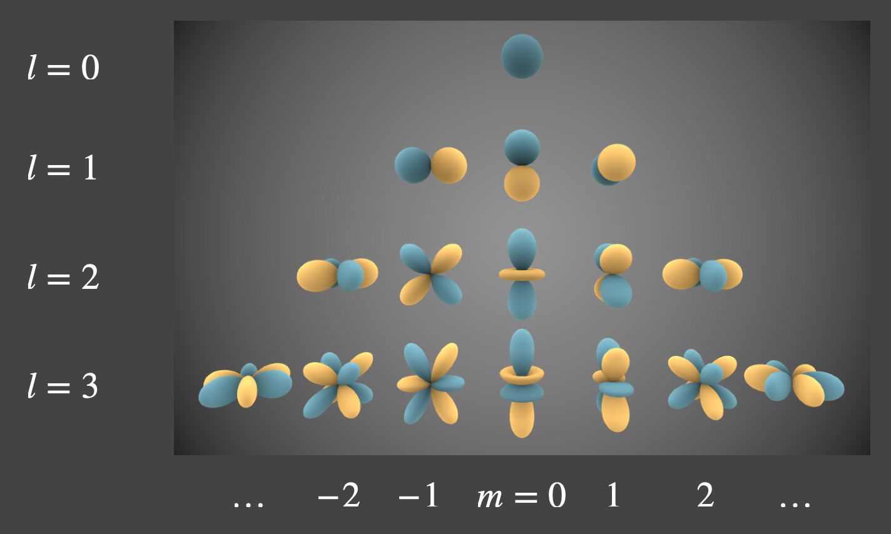
- 图中的颜色表示值，颜色越发白值越大，并且蓝黄颜色表示正负
- \(l\) 表示 SH 的阶数，每一阶有 \(2l + 1\) 个基函数（编号从 \(-l\) 到 \(l\)），且前 \(n\) 阶 SH 共有 \(n^2\) 个基函数
- 每个 SH 基函数与一个多项式关联
- 基函数使用勒让德多项式写的（不过由于太麻烦了所以没给公式）
-
投影(projection)：获取每个 SH 基函数的系数
\[ c_i = \int_\Omega f(\omega)B_i(\omega) d\omega \] -
重建(reconstruction)：使用（截断后的(truncated)）系数和基函数恢复原来的函数
注
也许有读者会想用 2D 的傅里叶变换替代 SH，但这样计算得到的球面就会出现裂缝，效果不是很好。
SH 的良好性质
-
正交归一性(orthonormal)
\[ \int_{\Omega} B_{i}(\mathbf{i}) \cdot B_{j}(\mathbf{i}) \mathrm{d}\mathbf{i} = \begin{cases} 1 & (i = j) \\ 0 & (i \neq j) \end{cases} \] -
简单投影/重建
-
简单旋转
- 基函数旋转之后其阶数不变，因此旋转后的基函数可通过同阶基函数的线性组合得到
- 所以支持任意旋转光照
-
简单卷积
- 少量基函数：低频
例子
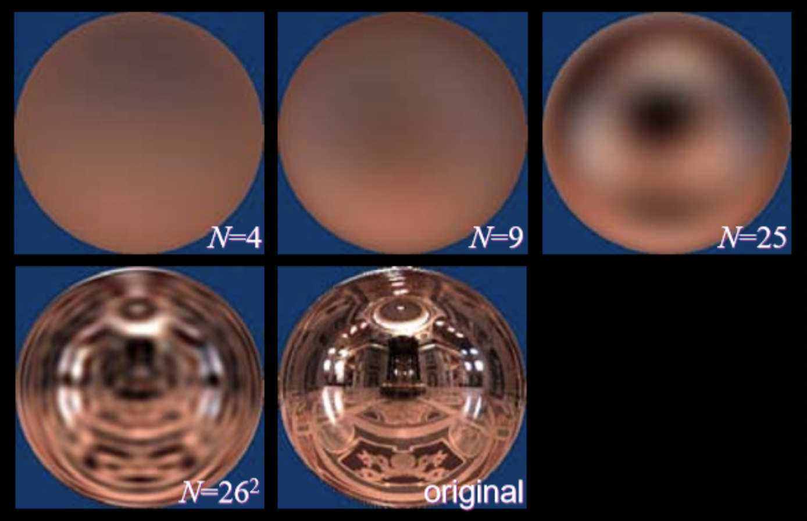
Prefiltered Environment Lighting
预滤波 + 单次查询 == 无滤波 + 多次查询
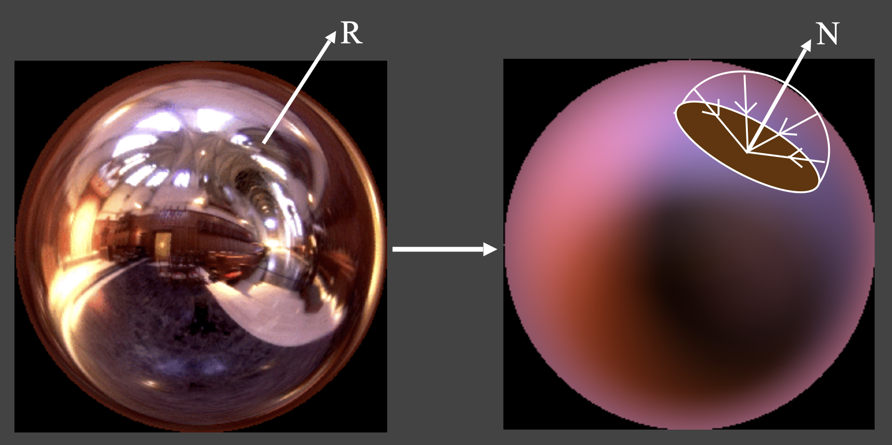
右图就是左图滤波后的结果，看起来从高光变成漫反射。
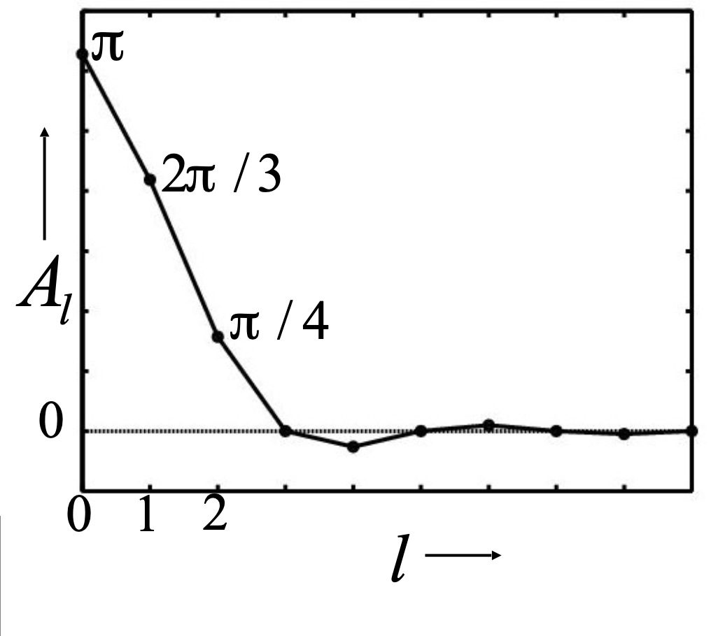
而漫反射的 BRDF 有一个很好的性质：它就像一个低通滤波器，此时只需要较少的 SH 就能描述它。
如右图所示，可以看到从 \(l = 3\) 后，\(A_l\) 的值就很接近于 0，也就是说通常只需要前三阶 SH 就能表示漫反射的 BRDF。
下面展示使用 SH 的近似表示结果：
-
只用第 0 阶（1 项）
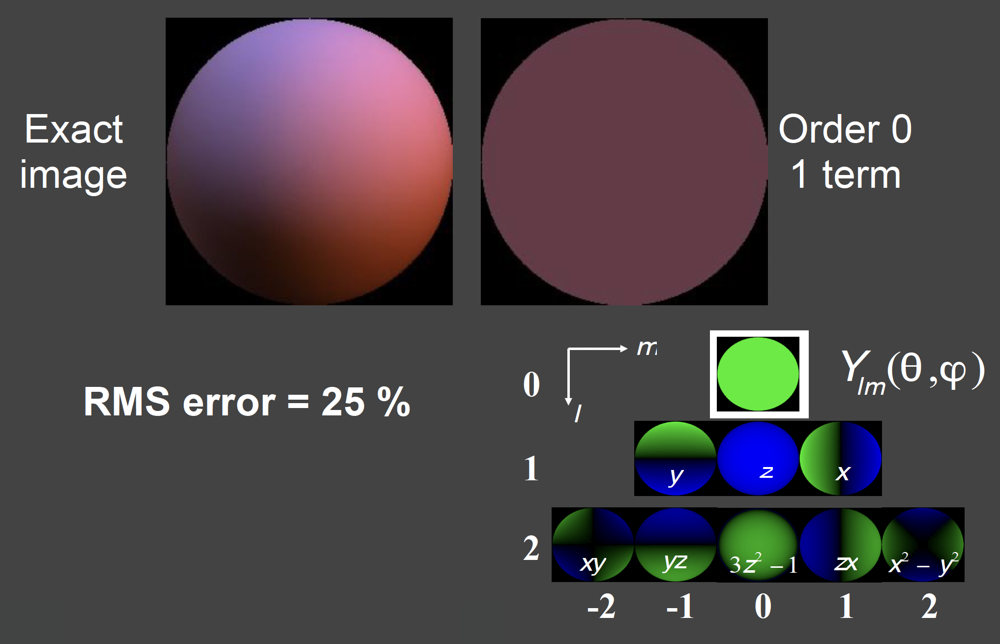
-
用到第 1 阶（4 项）
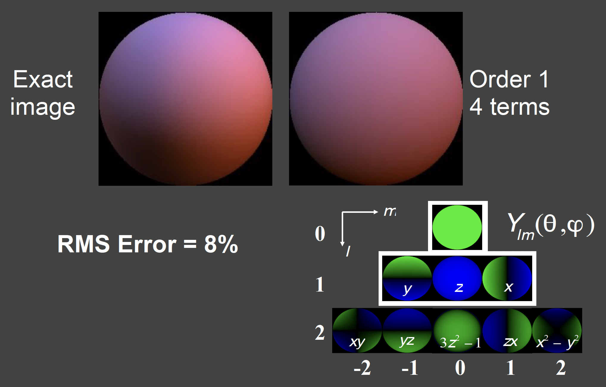
-
用到第 2 阶（9 项）
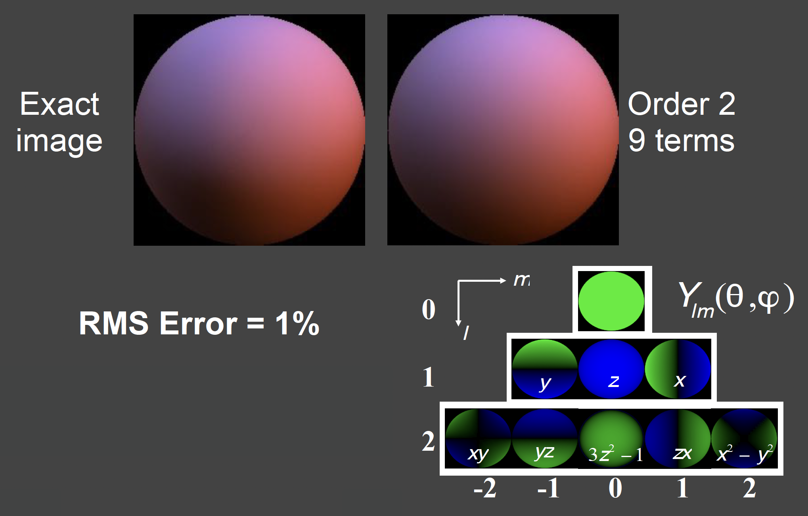
结论：对于任意光照，采用前三阶 SH 近似表示漫反射 BRDF 的误差 < 3%。
提出这一方法的作者仅用短短几行代码（一种简单的过程渲染方法，仅包含矩阵-向量乘法和点乘，因此可直接在软件或利用 NVIDIA 的顶点编程硬件实现）就能计算环境光照下任何一点的着色结果。但现在在游戏（比如 Xbox 的 AMPED）、电影（Pixar，Framestore CFC 等）等行业已得到广泛应用。
surface float1 irradmat(matrix4 M, float3 v) {
float4 n = {v, 1} ;
return dot(n, M*n) ;
}
对应公式：\(E(n) = n^t M n\)
Precomputed Radiance Transfer (PRT)
接下来我们便希望上面这趟方法还能用在高光的 BRDF 上，并且要考虑阴影。解决方法便是预计算辐射传输(precomputed radiance transfer, PRT)。它既可以用于处理环境光照，也能应用于全局光照的实现中（这部分将在下一讲介绍）。
在实时渲染中，人们更愿意把渲染方程写成以下形式：
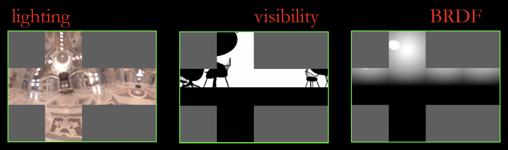
- \(\mathbf{i, o}\) 分别对应入射/观察方向
- 上面标记出来的三个函数全是球面上的函数
假设贴图的分辨率为 6*64*64（立方体有 6 个面），如果直接按上述公式算场景中任意一点的着色结果，那么每一点要进行 6*64*64 次计算，显然是非常麻烦的事。
有人想到利用基函数的性质，把其中复杂的一些东西预计算出来————这便是 PRT 方法。回到前面的渲染方程，现在我们这样来看等号右边的函数：
对于任何一点，光传输是固定不变的，而光照是可变的
-
使用基函数近似表示光照(lighting)：\(L(\mathbf{i}) \approx \sum l_i B_i(\mathbf{i})\)
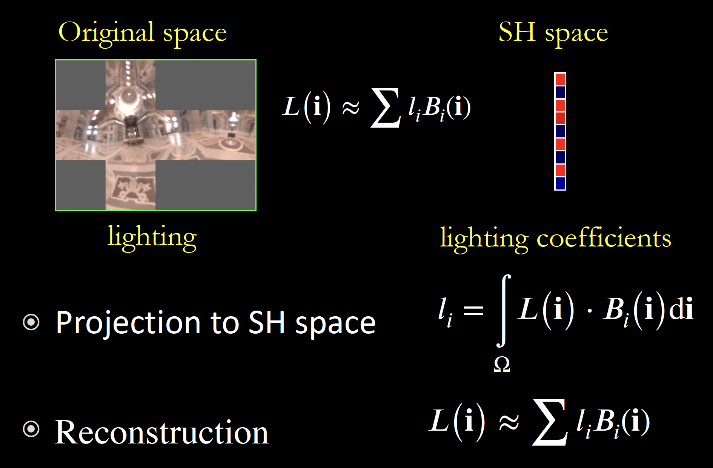
-
预计算阶段：计算光传输(light transport)，并投影到基函数空间
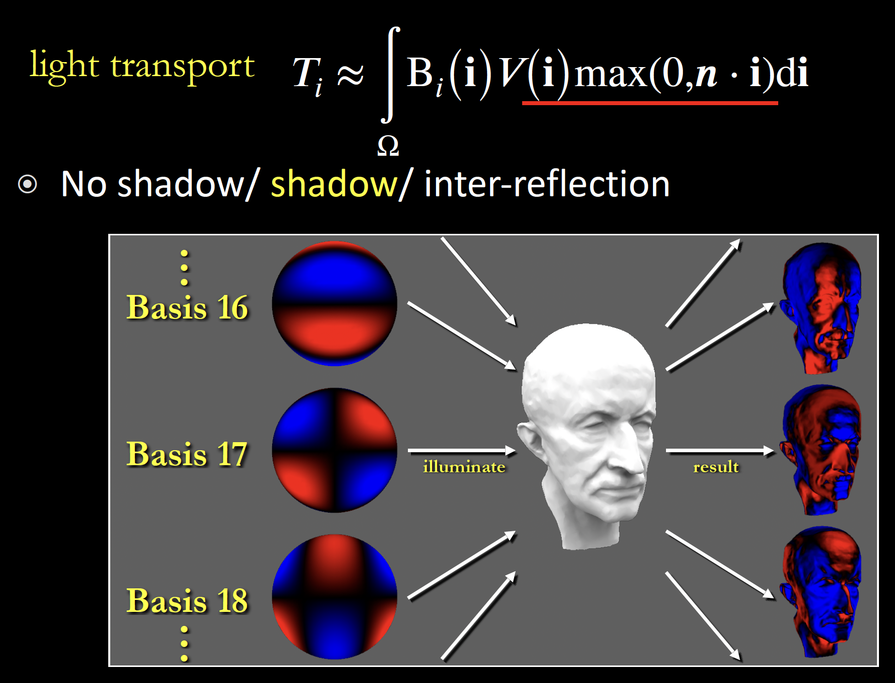
-
运行时阶段：点乘（漫发射）或矩阵-向量乘法（镜面反射），下面只考虑前者
\[ \begin{aligned} L(\mathbf{o}) &= \rho \int_{\Omega} \underline{L(\mathbf{i})} V(\mathbf{i}) \max(0, \mathbf{n} \cdot \mathbf{i}) \mathrm{d}\mathbf{i} \\ & \Downarrow \quad L(\mathbf{i}) \approx \sum l_i B_i(\mathbf{i}) \\ L(\mathbf{o}) &\approx \rho \sum_{i} l_{i} \underline{\int_{\Omega} B_{i}(\mathbf{i}) V(\mathbf{i}) \max(0, \mathbf{n} \cdot \mathbf{i}) \mathrm{d}\mathbf{i}} \\ & \Downarrow \quad \text{Precomputed}\\ L(\mathbf{o}) &\approx \rho \sum_{i} l_{i} T_{i} \end{aligned} \]- 「实时」意味着可以在着色器中轻易实现
通过这样的转换，原本求解积分的问题被转换为求和问题，计算上简化了许多。
例子
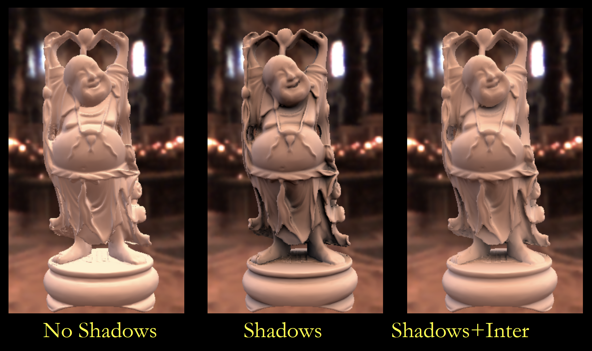
- 有阴影是因为考虑了可见性项
- 最后阴影 + 相交（Inter）的情况中，后者是指光线可以弹射多次，这要到下一讲再展开介绍
代价
「预计算」场景意味着场景中的物体不能动。
评论区